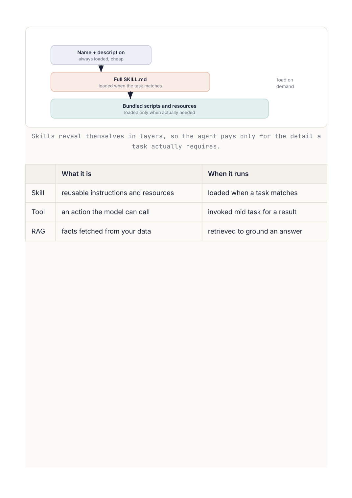

AI Engineering
Chapter 41
Skills
As agents take on bigger jobs, you do not want to cram every possible instruction into one giant prompt. A skill is the answer: a self contained folder of instructions and resources that the agent pulls in only when the task actually calls for it. Reusable know how, loaded on demand.
Skill library (name + short description) pdf skill make and fill PDFs docx skill load Matcher Load full SKILL.md Word documents task to best skill only the matched one data skill charts and analysis The agent sees only short descriptions until a task matches, then loads that one skill's full instructions.
What a skill is
A skill is a folder with a SKILL.md file at its root. That file has a name and, crucially, a description of when to use it, followed by the detailed instructions and any helper scripts or templates. The description is what lets the agent decide whether this skill is relevant to the task in front of it.
Progressive disclosure
The clever part is how skills are loaded. The agent first sees only the short name and description of every skill, which costs almost nothing. When a task matches one, it loads that skill's full instructions, and only then. This progressive disclosure keeps the context lean while still giving the agent access to a large library of detailed procedures. Skills capture hard won, reusable methods, like how to produce a polished document or fill a form, so the agent does not have to rediscover them every time.
---
name: pdf
description: >
Create, read, edit, or fill PDF files. Use whenever the user
wants to make a PDF, extract text or tables, merge or split
pages, add a watermark, or fill a form. Do NOT use for Word docs.
---
# Making a PDF
1. Draft the content in HTML with the house styles below.
2. Render it to PDF with the provided script.
3. Save the result to the outputs folder and share the link.
(the rest of the detailed, reusable procedure follows)
T H E D E S C R I P T I O N D E C I D E S E V E R Y T H I N G
A skill only helps if it triggers at the right moment, and that depends entirely on how well its description names the situations it applies to. A vague description gets skipped or fires at the wrong time. This very system uses skills exactly like these to build Word documents, spreadsheets, and PDFs, which is a real example of the pattern in action.
Going Deeper
Progressive disclosure, layer by layer
Skills work because they are revealed in layers rather than dumped into the context all at once. At the cheapest layer, the agent sees only each skill's name and one line description, which costs almost nothing even across a large library. When a task matches a description, the agent loads that skill's full instructions, the SKILL.md body. And only if the procedure calls for it does it reach the deepest layer, the bundled scripts, templates, and reference files. This layering is what lets an agent carry hundreds of skills without drowning its context, and it is exactly why a skill's description has to name its situations precisely, since that one line is what triggers everything below it.

Skills reveal themselves in layers, so the agent pays only for the detail a